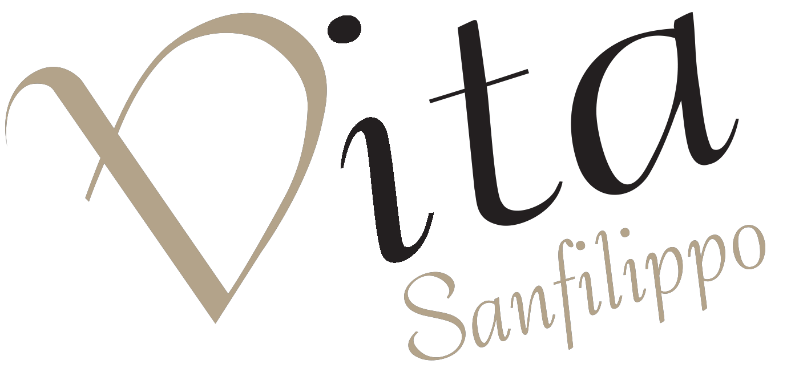
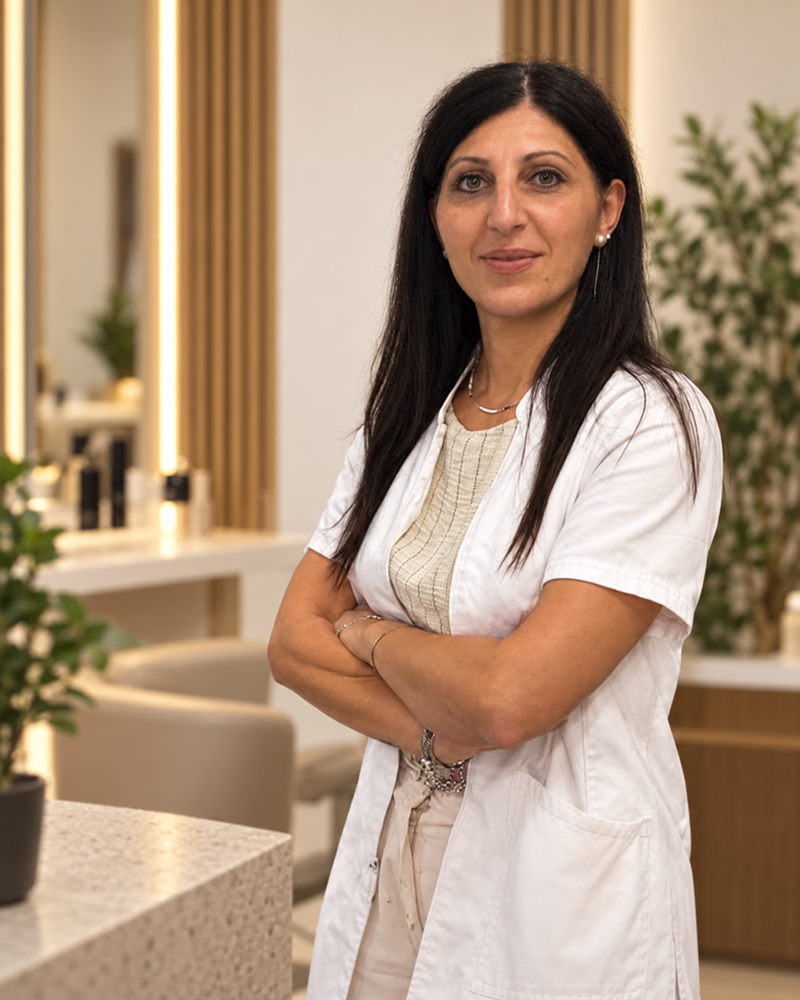
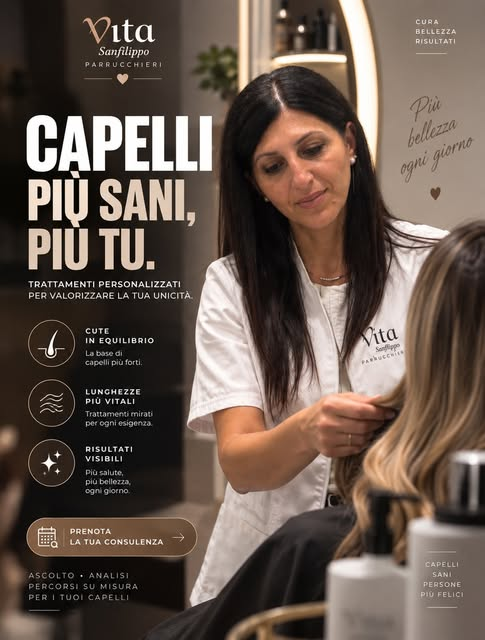
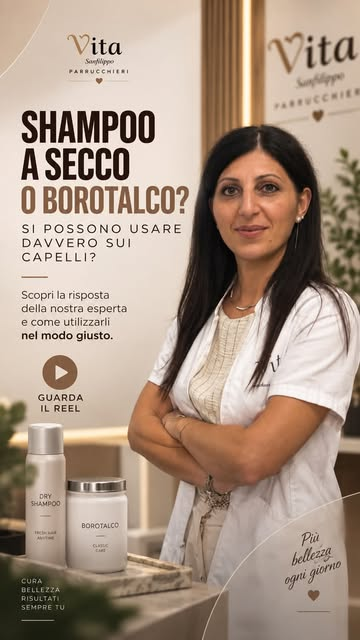
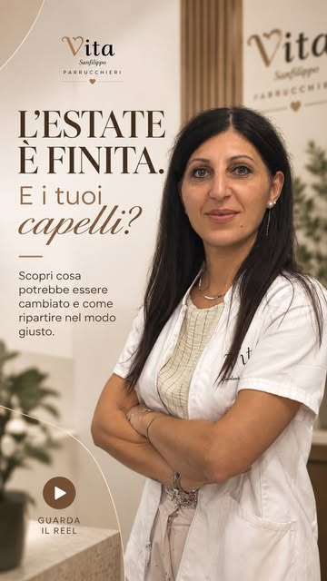
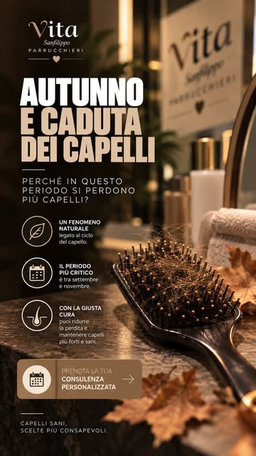

Ti ascolto.
Parliamo dei tuoi capelli, delle tue abitudini e di ciò che vorresti cambiare. Le tue esigenze guidano il primo incontro.
IL PUNTO DI PARTENZA SEI TU
Parliamone ↗CONSULENZA & CURA DEI CAPELLI · RAVANUSA
Ogni capello ha una storia.
Il mio lavoro è comprenderla, per prendermene cura insieme a te.

LA TUA PROFESSIONISTA, VICINO A TE.La cura giusta
parte da te.
01 — CONOSCI VITA
Sono Vita. Nel mio salone a Ravanusa, la bellezza incontra la cura di cute e lunghezze.
Un capello che si appesantisce facilmente. Punte che sembrano sempre secche. Una routine che non senti più tua. Per scegliere come prendertene cura, cominciamo da quello che mi racconti.
All’ascolto affianco l’osservazione con microcamera e una consulenza dedicata. Da qui nasce un percorso pensato per le tue esigenze, in salone e nella cura quotidiana.
Ti racconto come lavoriamo ↗
02 — IL MIO APPROCCIO
Nessun percorso è uguale a un altro.
Il tuo comincia da una conversazione.
Parliamo dei tuoi capelli, delle tue abitudini e di ciò che vorresti cambiare. Le tue esigenze guidano il primo incontro.
IL PUNTO DI PARTENZA SEI TUCon l’aiuto della microcamera osserviamo cute e capelli da vicino. Un passaggio per orientare la consulenza con maggiore attenzione.
UNO SGUARDO PIÙ ATTENTOScegliamo i trattamenti e le attenzioni più adatti a cute e lunghezze, con indicazioni per prendertene cura anche a casa.
LA CURA CONTINUA OGNI GIORNO03 — IL TUO PRIMO PASSO
Riconosci un’esigenza? Selezionala per preparare
un messaggio a Vita e richiedere una consulenza.
IL PERCORSO PARTE DALLA CONSULENZA
Cute che si appesantisce e punte secche possono avere esigenze diverse. Parliamone insieme, per scegliere una cura mirata.
Richiedi una consulenza ↗Si apre WhatsApp. Il messaggio viene inviato solo da te.LE DOMANDE CHE PORTI IN SALONE
Dalla cute alle punte, dalle abitudini ai cambiamenti di stagione: gli argomenti che approfondisco anche sul mio profilo Instagram.
01 / ESIGENZE DIVERSE
Dalla radice alle punte,
la cura cambia.
“La cute è grassa, ma le punte sono secche. Com’è possibile?” È una delle domande da cui parto nei miei contenuti.
Cute e lunghezze non raccontano sempre la stessa storia. Potresti sentire il bisogno di lavare i capelli spesso e, nello stesso momento, trovare le punte spente o difficili da gestire. In consulenza diamo spazio a entrambe le sensazioni, senza ridurre tutto a un’unica etichetta.
Mi interessa capire cosa noti dopo il lavaggio, quali prodotti utilizzi e come si comportano i capelli nei giorni successivi. Sono dettagli utili per orientare l’osservazione e ragionare su attenzioni diverse per la cute e per le lunghezze.
Quando senti i capelli più pesanti? E in quale punto li percepisci più secchi? La consulenza comincia anche da queste piccole osservazioni.
Lo shampoo si massaggia delicatamente sulla cute; durante il risciacquo scorre sulle lunghezze, che non hanno bisogno di essere strofinate con forza. Il balsamo aiuta a ridurre attrito e rottura del capello. Da questi gesti di base possiamo partire per rivedere la tua routine.
Per approfondire: indicazioni generali AAD sulla cura dei capelli ↗02 / OSSERVARE PRIMA DI SCEGLIERE
Una domanda più precisa.
Una conversazione più utile.
Vedere capelli sulla spazzola può farti pensare subito alla caduta. Nel mio carosello invito a distinguere questo tema da quello della rottura.
Prima di scegliere un prodotto o un trattamento, vale la pena raccontare con precisione ciò che osservi: da quando lo noti, in quali momenti e se sono cambiate le tue abitudini di cura. In salone raccogliamo queste informazioni e osserviamo i capelli con attenzione.
Il punto di partenza non è una soluzione uguale per tutti. È una consulenza che aiuti a fare ordine tra le tue domande e a definire le attenzioni cosmetiche adatte alle tue esigenze. La microcamera è uno strumento di osservazione a supporto del percorso, non una diagnosi medica.
Comprendere ciò che mi racconti viene prima della scelta del trattamento. Ascolto e osservazione fanno parte dello stesso incontro.
La caduta riguarda il distacco del capello; la rottura riguarda il fusto, che si spezza. Un capello danneggiato è più fragile e può rompersi più facilmente. Sono aspetti diversi: osservare dei capelli sulla spazzola, da solo, non basta a stabilire la causa.
Se noti una perdita insolita o un diradamento, il riferimento per chiarirne le cause è il dermatologo. In salone ci concentriamo sulla cura cosmetica e sulle abitudini che accompagnano i tuoi capelli.
Per approfondire: AAD, caduta e perdita dei capelli ↗03 / IL RIENTRO DALLE VACANZE
È il titolo di uno dei miei Reel: un invito a fermarsi e osservare come senti cute e lunghezze dopo le vacanze.
Nei contenuti dedicati al rientro parlo di sole, mare, vento, cloro e delle abitudini che cambiano durante l’estate. L’obiettivo è riportare l’attenzione sulla cura quotidiana e sulle esigenze che percepisci in quel momento.
Tra i temi che presento ci sono lo scrub purificante per la cute, i sieri dedicati alla cura del capello e i trattamenti alla cheratina per le lunghezze. Sono possibilità da valutare nel contesto di un percorso personalizzato: il contenuto social apre la conversazione, la consulenza ci aiuta a scegliere.
Possiamo partire da ciò che desideri ritrovare: una sensazione di leggerezza, lunghezze più curate o una routine che torni a essere semplice da seguire.
Esposizione solare e piscina possono contribuire a rendere i capelli secchi e fragili. Proteggerli dal sole e risciacquarli dopo il nuoto sono attenzioni da considerare nella routine estiva. Al rientro, raccontami come li senti: la scelta dei trattamenti parte dalle esigenze che osserviamo insieme.
Per approfondire: AAD, cura dei capelli in estate ↗04 / I GESTI DI OGNI GIORNO
Una routine che conosci.
Una cura che senti tua.

“Capelli già sporchi dopo pochi giorni?” e “Shampoo a secco o borotalco?”: due domande quotidiane che trovano spazio sul mio profilo.
La routine è fatta di gesti che ripetiamo quasi senza pensarci. In consulenza possiamo rileggerli insieme: quali prodotti scegli, come li utilizzi, quanto tempo dedichi alla cura e cosa vorresti rendere più semplice.
Nel Reel dedicato allo shampoo a secco e al borotalco affronto una domanda concreta sull’uso dei prodotti. Per ascoltare la spiegazione completa puoi aprire il video originale. Qui il mio invito è a portare in salone anche i dubbi che sembrano piccoli: aiutano a costruire una conversazione davvero personale.
Come sono i tuoi capelli appena lavati e nei giorni successivi.
I prodotti e le abitudini che fanno già parte della tua giornata.
A una routine coerente con le tue esigenze e i tuoi tempi.
Assorbe l’olio in eccesso e può rendere i capelli più freschi nell’aspetto tra un lavaggio e l’altro. Non deterge, però, come shampoo e acqua: non sostituisce il lavaggio regolare. La quantità, la zona di applicazione e le istruzioni del prodotto contano.
Una polvere per il corpo non va considerata automaticamente equivalente a un prodotto formulato per i capelli. Nel Reel trovi la spiegazione di Vita; in consulenza possiamo parlare dei prodotti che già utilizzi e del ruolo che hanno nella tua routine.
Per approfondire: AAD, uso dello shampoo a secco ↗05 / ASCOLTARE I CAMBIAMENTI
La stessa persona.
Esigenze che possono cambiare.

L’autunno e la caduta dei capelli sono al centro di un altro Reel del mio profilo.
I cambiamenti che noti nei capelli meritano tempo e ascolto. In consulenza puoi raccontarmi quando sono iniziati, cosa ti ha colpito e quali domande ti stai facendo. Non serve arrivare con una risposta già pronta.
Il contenuto dedicato all’autunno introduce il tema della stagionalità. Il nostro incontro parte invece dalla tua esperienza specifica, per ragionare sulle abitudini e sulla cura cosmetica di cute e lunghezze senza trasformare un consiglio generale in una promessa personale.
Un Reel può accendere una domanda. La consulenza è lo spazio per raccontarla con calma e approfondire le tue esigenze.
06 / DALLA CONSULENZA ALLA CURA
Il filo conduttore dei miei contenuti è lo stesso che trovi in salone: ascolto, osservazione e attenzioni su misura.
Nei miei contenuti dedico spazio alla cute, alla sensazione di pulizia e alla detersione. In consulenza osserviamo le tue esigenze per valutare quali attenzioni e trattamenti inserire nel percorso.
Lo scrub purificante è uno dei temi presentati sul profilo. Prima di sceglierlo, ne parliamo insieme nel contesto della tua routine.
Secchezza, aspetto spento e gestione quotidiana sono altri punti di partenza della conversazione. L’obiettivo è comprendere come senti i capelli e quali attenzioni desideri dedicare loro.
Tra i contenuti pubblicati trovi anche i trattamenti alla cheratina per le lunghezze: una possibilità da approfondire durante la consulenza.
Un percorso deve avere senso anche nella tua quotidianità. Per questo la conversazione riguarda i tuoi capelli, ma anche i gesti, il tempo e le abitudini che accompagnano la loro cura.
In salone definiamo insieme il punto di partenza. Prezzi, modalità e appuntamento vengono concordati direttamente con me.
Hai riconosciuto una domanda che ti riguarda?
Partiamo dalla tua esigenza ↗04 — I CONSIGLI DI VITA
Domande vere, spiegazioni semplici.
Dal mio salone al tuo quotidiano.

GUARDA SU INSTAGRAM ↗CAMBIO DI STAGIONE
Il tema della caduta stagionale, raccontato da Vita.
LA ROUTINE QUOTIDIANA
Una domanda comune, da approfondire insieme.
CURA DOPO L’ESTATE
Un nuovo punto di partenza per la tua cura.
PRIMA DI INCONTRARCI
Da una conversazione sulle tue esigenze e sulla tua routine. All’ascolto si affianca l’osservazione con microcamera, per definire insieme il percorso di cura.
Scrivi a Vita su WhatsApp al 329 466 4438 oppure chiama. Il giorno e l’orario vengono concordati direttamente con il salone.
Certo. Puoi raccontare ciò che vorresti approfondire e chiedere informazioni su modalità, tempi e costo della consulenza direttamente a Vita.
In Via Generale Cascino 87, a Ravanusa, in provincia di Agrigento. Apri le indicazioni ↗
IL PROSSIMO PASSO È INSIEME
Raccontami di cosa hanno bisogno.
Troviamo insieme il tuo punto di partenza.